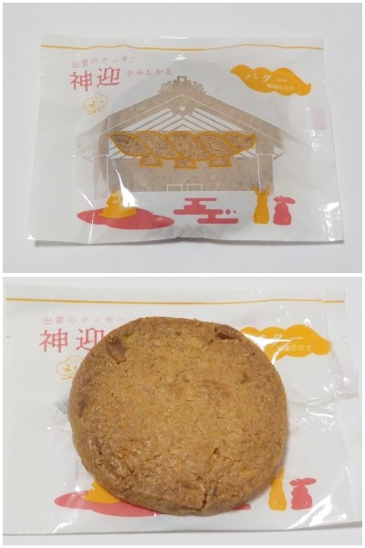

みまつのクッキー神迎はザクザクでした。
更新日 : 2026/10/14

外観だけ見ると何かの模様が付いたお土産っぽいサブレが入っているのかなと思ったんですが、中にはコンガリとしたクッキーが入ってました。
噛むとザクザクっと崩れる感じで、コゲ感と色んな素材の風味がしました。
和菓子屋さんは最近はこんな商品も作ってるんですね。新しい感じがしていいです。
更新日 : 2026/10/14

外観だけ見ると何かの模様が付いたお土産っぽいサブレが入っているのかなと思ったんですが、中にはコンガリとしたクッキーが入ってました。
噛むとザクザクっと崩れる感じで、コゲ感と色んな素材の風味がしました。
和菓子屋さんは最近はこんな商品も作ってるんですね。新しい感じがしていいです。